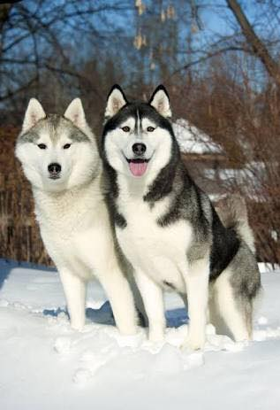

 |
| The Siberian Husky is a beautiful dog breed with a thick coat that comes in a multitude of colors and markings. Their blue or multi-colored eyes and striking facial masks only add to the appeal of this breed, which originated in Siberia. It is easy to see why many are drawn to the Siberian’s wolf-like looks, but be aware that this athletic, intelligent dog can be independent and challenging for first-time dog owners |